|
 |
|
|---|---|
| Elemento | Sangue |
| Usuário | Henri |
Henri se levanta com uma armadura formada por seu próprio sangue e marca seus inimigos com símbolos paranormais.
Ele marca dois alvos com o símbolo de enviar dor e outro alvo com o símbolo de receber dor.
Parte da dor causada nos alvos marcados com o símbolo de enviar dano é transferida para o alvo marcado com receber dano.
Em um momento extremo, Henri marcou a si próprio e ameaçou cortar a própria garganta, o que mataria todos os conectados.